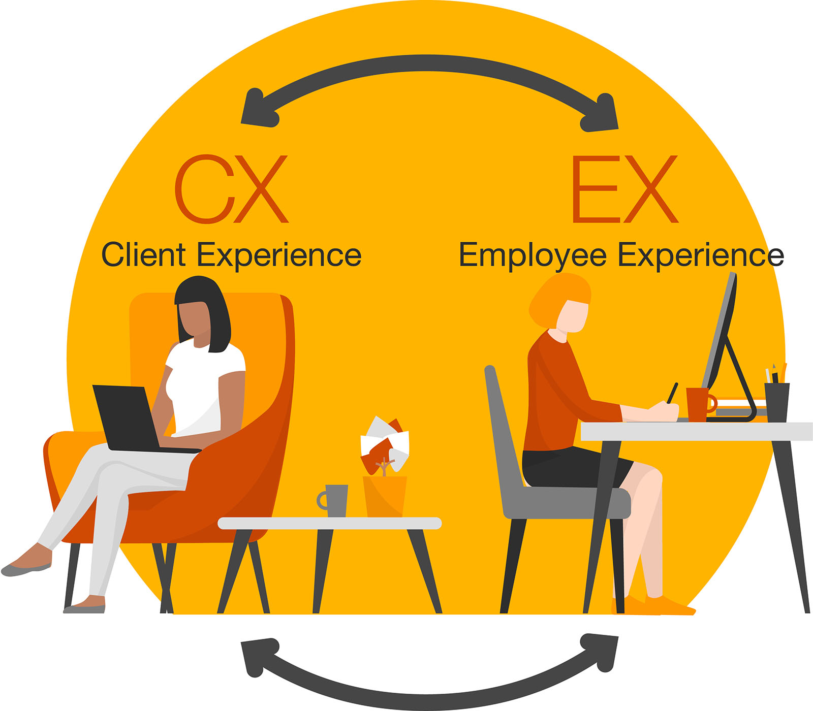
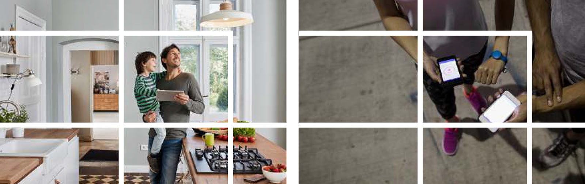
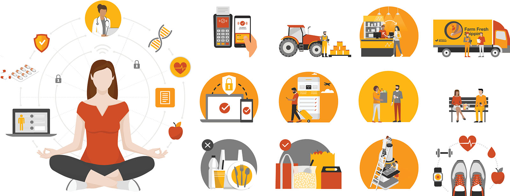
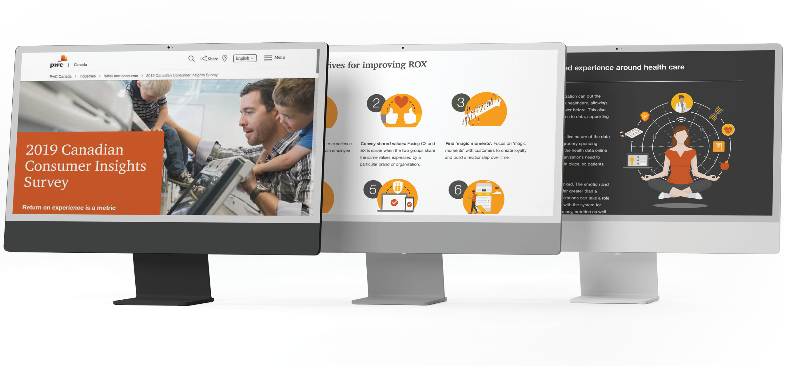
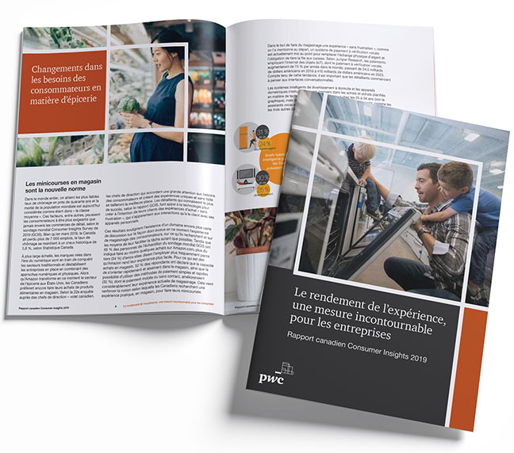
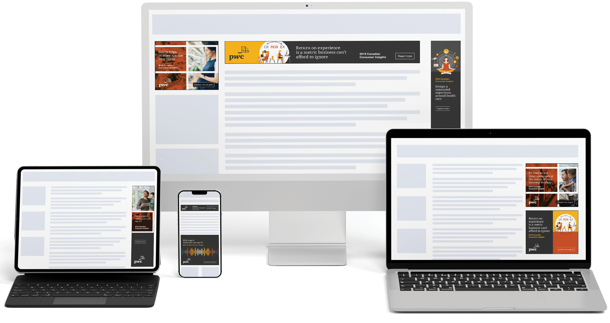
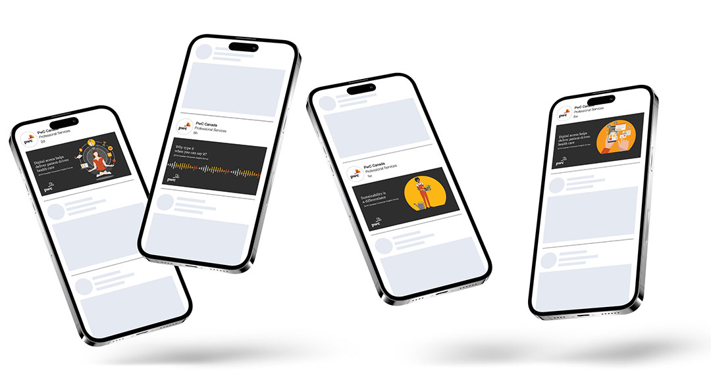

Integrated campaign delivery at scale
Leading creative strategy and execution across digital, social and programmatic touchpoints
The challenge
Building thought leadership in a competitive space
As the sole creative on a cross-functional team, direction, execution and stakeholder alignment were all mine to own—across six channels, two languages and full accessibility compliance. The objective was equally ambitious: introduce Return on Experience (a new framework connecting customer and employee experience to business outcomes) and establish PwC Canada as its defining voice in the market.
The brief: Position PwC Canada as a leading voice on consumer experience while breaking through in an increasingly saturated consulting landscape.
Timeline: Two and a half months from brief to delivery
Key constraints: Newly simplified PwC global brand standard, bilingual and AODA-compliant delivery across all channels

Strategic approach
Unified and impactful creative delivery using brand toolkit
For the Consumer Insights campaign, the creative challenge was to work within PwC’s globally defined brand toolkit—narrowing it down to build story-focused creative that was distinctive without departing from brand.
The creative architecture
- Colour palette: Applied a complementary colour family drawn from PwC’s core palette across all deliverables, creating visual continuity while allowing flexibility across channels and formats.
- Photography with custom linework overlay: Selected Getty imagery capturing authentic moments of customer and employee experience, then applied custom overlays connecting human moments to data insights.
- Representational illustrations: Sourced base illustrations from Getty, then heavily adapted them to match campaign colour palette and visual style, making complex business frameworks feel approachable without losing rigour.
- Modular flexibility: Designed the system so components could be combined differently across channels without losing overall coherence.
Complementary colour family from PwC core palette
Getty stock imagery with custom linework overlays

Adapted stock vectors, shifted to brand-defined palette and style

Execution and delivery
Consistent visuals across six touchpoints and dozens of deliverables
Keeping a visual identity coherent across six channels is a systems problem as much as a creative one. As the sole creative, I owned both ends: setting the visual framework and then producing every asset myself, from microsite layouts to programmatic banners, all while earning continuous alignment from channel specialists, subject matter experts and practice leaders who each had a stake in the outcome.
Every deliverable was produced in English and French and to full WCAG 2.0 accessibility standard—requirements built in from the first brief, not compliance checkboxes at the end.
Built in AEM, bilingual and responsive

Bilingual, AODA compliant

HTML5 ads in all standard IAB sizes, four sets of creative

Animated assets for LinkedIn, multiple content phases

Impact and outcomes
Delivering thought leadership that resonates
On time
On brand
On budget
Fully bilingual
AODA compliant
Discipline around brand standards enhances rather than limits creative storytelling
What made this work
- Strategic discipline: Building from the existing toolkit rather than inventing something new delivered a stronger campaign and built long-term brand equity simultaneously—the right creative and commercial call.
- Modular systems thinking: Designing for modularity from the start meant the visual system could adapt across channels, topics and formats without losing coherence—flexibility without fragmentation.
- Influence without authority: As the sole creative in a team of channel specialists and senior stakeholders, maintaining creative integrity required earning trust through clarity of thinking and consistency of output, not positional authority.